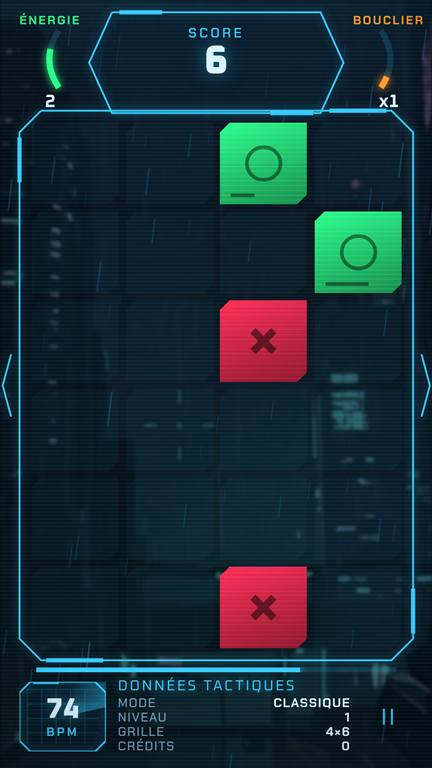
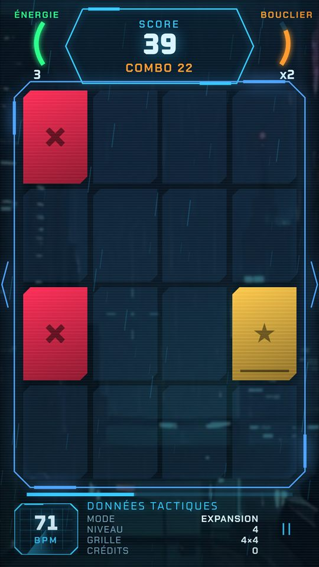
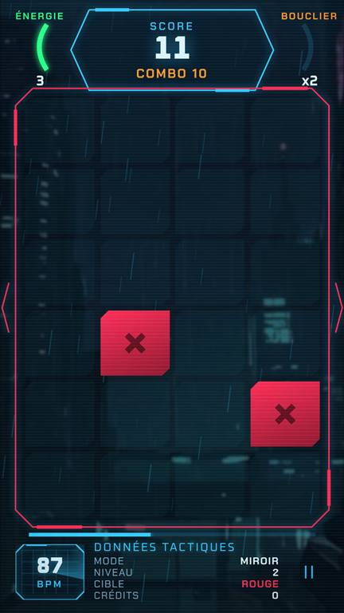
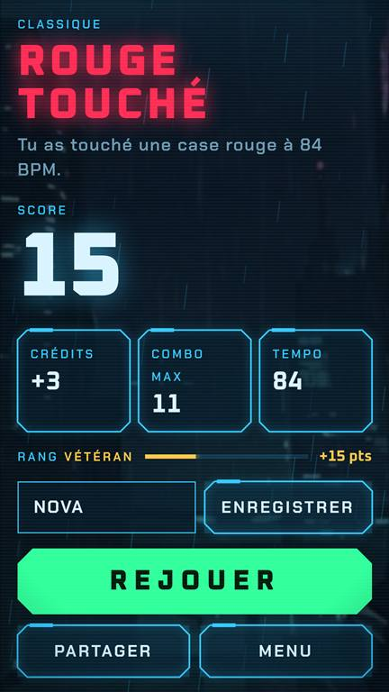
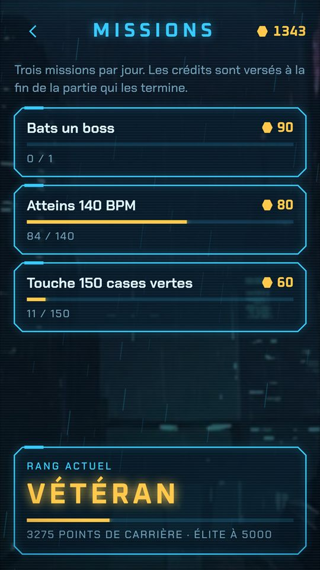

○
Vert : touche
Chaque case verte touchée rapporte des points. En laisser filer une coûte une vie.
Jeu de réflexes en rythme · gratuit · sans publicité
Touche le vert. Jamais le rouge.
Un doigt, une seule règle. Les cases tombent sur les temps de la musique, et la musique accélère sans fin. Au début c'est calme. Quelques minutes plus tard, tu joues à 180 BPM et les cases commencent à mentir.
Tout tient en une règle. Le reste, c'est la musique qui te pousse à te tromper.
Chaque case verte touchée rapporte des points. En laisser filer une coûte une vie.
Une case rouge touchée, et la partie s'arrête. Pas de deuxième chance.
Les étoiles dorées rapportent 5 crédits pour la boutique.
Vert qui vire au rouge, rouge qui devient vert, cases qui clignotent : elles valent double, si tu ne te fais pas avoir.
Bleue ralentit le tempo 3 s, violette efface les rouges, noire : garde le doigt appuyé.
Un boss tous les 5 niveaux : 15 s de pièges, +50 points si tu survis. Les combos montent jusqu'à ×4.
Une interface de cockpit holographique, une ville sous la pluie, et des cases qui ne te laissent jamais souffler.





Chaque mode change une seule chose. C'est largement assez.
3 vies, un palier tous les 8 verts. La base, et déjà pas facile.
60 secondes pour marquer un maximum. Toucher un rouge coûte 5 secondes.
Une seule vie. Une seule erreur et c'est fini.
Plus de la moitié des cases changent de couleur au dernier moment.
La grille passe de 2×3 à 7×9 cases. Tes yeux vont courir.
Touche quand l'anneau se referme. Vise le « Parfait » (±70 ms).
Tous les 16 temps, la couleur à toucher s'inverse. Le vert devient l'ennemi.
Le plateau tourne, se retourne, zoome. Séisme, tornade, brouillard… et une téléportation à la ferme pour un mini-jeu avec une poule.
La même partie pour tout le monde, un seul essai officiel par jour.
Un code de 5 caractères : ton ami joue exactement la même suite de cases que toi.
5 difficultés, de Facile à Impossible : tempo, fintes, vies et crédits changent (×0,5 à ×3).
Une campagne de 20 mondes de 10 niveaux, chacun avec ses couleurs, son mode et 3 quêtes. Réussis-les toutes pour débloquer le thème du niveau.
Thèmes holographiques, effets (spirale, étoiles, flammes, glitch, nova…), formes de cases et fonds. Essaie avant d'acheter, avec les crédits gagnés en jouant. Rien à payer, jamais.
Les cases tombent sur les temps : la musique, c'est l'horloge du jeu. 4 musiques d'origine dont « Sync or Die », et 17 musiques libres à débloquer.
Chargement du classement…
Le total des meilleurs scores de chaque joueur, dans tous les modes. Mis à jour en direct.
Gratuit, sans publicité, et ça marche même hors ligne.
Tu avais Redless avant octobre 2026 et Android dit « Application non installée » ? Une seule fois : crée un compte dans le jeu (Réglages → Compte) pour garder ta progression, désinstalle l'ancienne version, puis installe celle-ci.
Redless a son propre serveur et son site. Les mises à jour arrivent toujours toutes seules.
Nouveau tempo : départ plus doux, puis accélération sans aucune limite. La musique suit jusqu'à 2×, ensuite les cases tombent entre les temps.
Droits et mentions des musiques au nom de MyBlackWhite.
Le menu affiche combien de joueurs sont venus.
Chaos encore plus fou : Séisme, Tornade, Mélange, Gelée, Brouillard, Géant, Déluge… et la poule de la ferme.
Nouveau mode Chaos : plateau qui tourne, se retourne, zoome, et téléportation dans un mini-jeu.
Écran de connexion au lancement, compte protégé par e-mail (sans mot de passe), bouton « Se déconnecter ».
Menus rangés, et 17 nouvelles musiques libres à débloquer.
La campagne de 200 niveaux, 5 difficultés et une boutique géante.
Classement général, fiche joueur, boutique avec défis, effets, et la barre « Mettre à jour ».